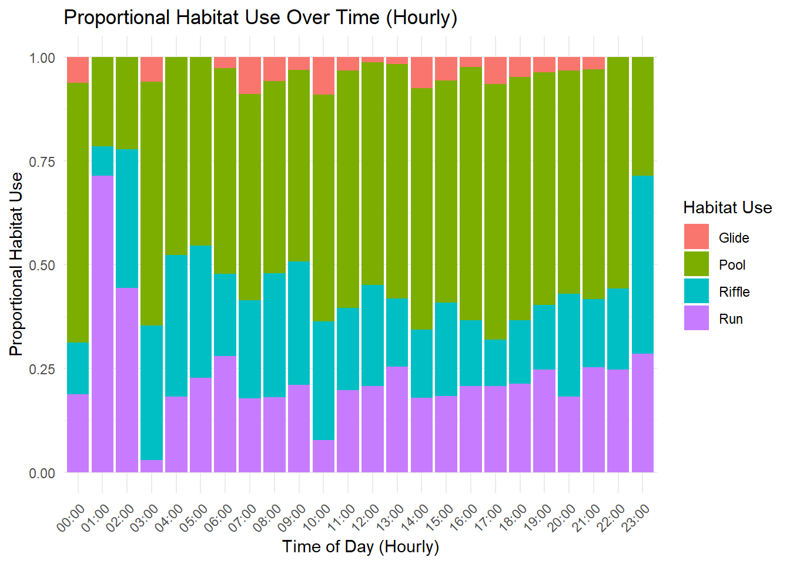
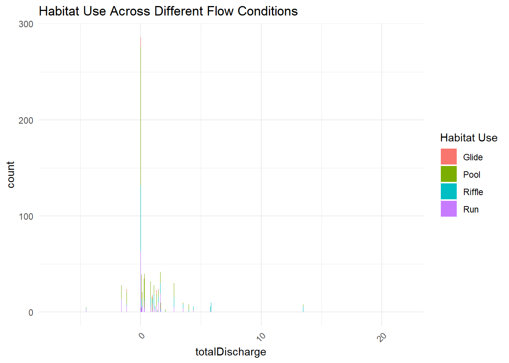
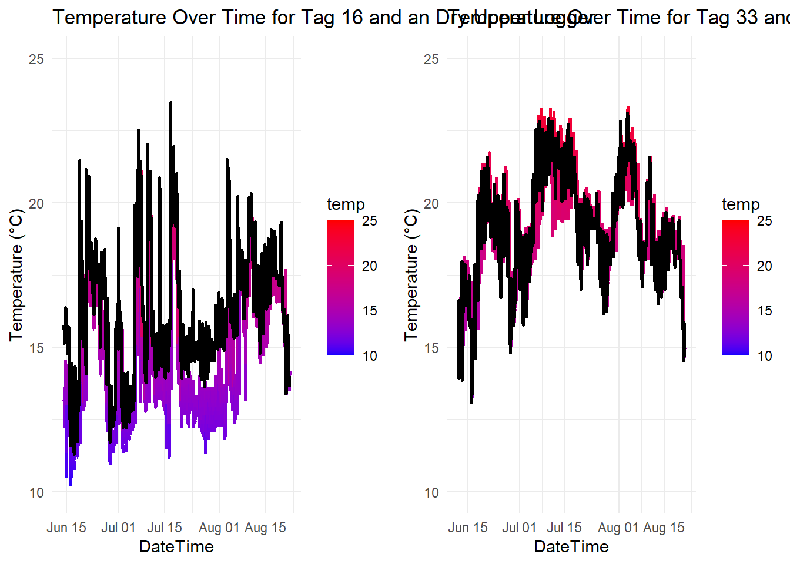

Code
# Load required libraries
library(lubridate)
library(dplyr)
library(ggplot2)
library(patchwork)
library(gridExtra)
library(readxl)
library(tidyverse)# Load required libraries
library(lubridate)
library(dplyr)
library(ggplot2)
library(patchwork)
library(gridExtra)
library(readxl)
library(tidyverse)# Read in the data
tracking_data_all <- read.csv("C:/Users/jpilchik/OneDrive - DOI/Documents/My study plan/Tagging/Tracking/radio_tracking_2024/tracking_data_all.csv")# Filter to only include 'iPad' as source and remove NA or blank habitats
iPad_data <- tracking_data_all %>%
filter(source == "iPad" & !is.na(habitat) & habitat != "")
# Convert trackedTime_EST to POSIXct
iPad_data <- iPad_data %>%
mutate(trackedTime_EST = as.POSIXct(trackedTime_EST,
format = "%Y-%m-%d %H:%M:%S",
tz = "EST"))
# Extract hour
iPad_data <- iPad_data %>%
mutate(hour_of_day = format(trackedTime_EST, "%H")) # Keep only hour in HH format
# Group by the hour of day and habitat, and then count occurrences
hourly_habitat_summary <- iPad_data %>%
group_by(hour_of_day, habitat) %>%
summarise(habitat_count = n(), .groups = 'drop') # Summing the number of each habitat per hour
# Convert hour_of_day to a numeric type for proper binning and sorting
hourly_habitat_summary <- hourly_habitat_summary %>%
mutate(hour_of_day = as.numeric(hour_of_day))
# Create the histogram with habitat use summed across all days
sum_habitat_use_hourly <- ggplot(data = hourly_habitat_summary, aes(x = hour_of_day, y = habitat_count, fill = habitat)) +
geom_bar(stat = "identity", position = "stack") + # Use bar plot for summed data
scale_x_continuous(breaks = 0:23, labels = sprintf("%02d:00", 0:23)) + # Set breaks for each hour
scale_fill_discrete(name = "Habitat Use") +
labs(title = "Summed Habitat Use Over Time (Hourly)",
x = "Time of Day (Hourly)",
y = "Total Habitat Use") +
theme_minimal() +
theme(axis.text.x = element_text(angle = 45, hjust = 1)) # Rotate labels for better visibility
# Print the plot
print(sum_habitat_use_hourly)
# Filter to only include 'iPad' as source and remove NA or blank habitats
iPad_data <- tracking_data_all %>%
filter(source == "iPad" & !is.na(habitat) & habitat != "")
# Convert trackedTime_EST to POSIXct
iPad_data <- iPad_data %>%
mutate(trackedTime_EST = as.POSIXct(trackedTime_EST,
format = "%Y-%m-%d %H:%M:%S",
tz = "EST"))
# Extract the hour of the day and convert to factor
iPad_data <- iPad_data %>%
mutate(hour_of_day = factor(format(trackedTime_EST, "%H"),
levels = sprintf("%02d", 0:23))) # Ensures leading zeros
# Group by hour and habitat, calculate total observations and proportions
hourly_habitat_summary_scaled <- iPad_data %>%
group_by(hour_of_day, habitat) %>%
summarise(habitat_count = n(), .groups = 'drop') %>%
group_by(hour_of_day) %>%
mutate(total_observations = sum(habitat_count), # Total observations for the hour
habitat_proportion = habitat_count / total_observations) # Proportion of each habitat
# Create the bar plot with proportional habitat use over hours (summed across all days)
prop_habitat_use_hourly <- ggplot(data = hourly_habitat_summary_scaled, aes(x = hour_of_day, y = habitat_proportion, fill = habitat)) +
geom_bar(stat = "identity", position = "stack") + # Use bar plot for proportional data
scale_x_discrete(name = "Time of Day (Hourly)", labels = sprintf("%02d:00", 0:23)) + # Display hour of day on the x-axis
scale_fill_discrete(name = "Habitat Use") +
labs(title = "Proportional Habitat Use Over Time (Hourly)",
x = "Hour of Day",
y = "Proportional Habitat Use") +
theme_minimal() +
theme(axis.text.x = element_text(angle = 45, hjust = 1)) # Rotate labels for better visibility
# Print the plot
print(prop_habitat_use_hourly)
# Arrange the plots into a 2x1 grid
grid.arrange(sum_habitat_use_hourly, prop_habitat_use_hourly, nrow = 1, ncol = 2)
# Save the enlarged plot
ggsave("C:/Users/jpilchik/OneDrive - DOI/Documents/My study plan/Tagging/Tracking//radio_tracking_2024/plots/habitat_use_hourly.png",
arrangeGrob(sum_habitat_use_hourly, prop_habitat_use_hourly, nrow = 1, ncol = 2),
width = 20, height = 12) # Adjust width and height as needed# Filter to only include 'iPad' as source and remove NA or blank habitats
iPad_data <- tracking_data_all %>%
filter(source == "iPad" & !is.na(habitat) & habitat != "")
# Convert trackedTime_EST to POSIXct
iPad_data <- iPad_data %>%
mutate(trackedTime_EST = as.POSIXct(trackedTime_EST,
format = "%Y-%m-%d %H:%M:%S",
tz = "EST")) # Adjust the format and timezone as needed
# Extract the date component
iPad_data <- iPad_data %>%
mutate(date_only = as.Date(trackedTime_EST)) # Extract only the date
# Group by date and habitat, then count occurrences
daily_habitat_summary <- iPad_data %>%
group_by(date_only, habitat) %>%
summarise(habitat_count = n(), .groups = 'drop') # Summing the number of each habitat per date
# Create the bar plot with habitat use over time (dates)
sum_habitat_use_daily <- ggplot(data = daily_habitat_summary, aes(x = date_only, y = habitat_count, fill = habitat)) +
geom_bar(stat = "identity", position = "stack") + # Use bar plot for summed data
scale_x_date(date_labels = "%Y-%m-%d", date_breaks = "1 week") + # Show labels every week
scale_fill_discrete(name = "Habitat Use") +
labs(title = "Summed Habitat Use Over Time (Daily)",
x = "Date",
y = "Total Habitat Use") +
theme_minimal() +
theme(axis.text.x = element_text(angle = 45, hjust = 1)) # Rotate labels for better visibility
# Print the plot
print(sum_habitat_use_daily)
# Filter to only include 'iPad' as source and remove NA or blank habitats
iPad_data <- tracking_data_all %>%
filter(source == "iPad" & !is.na(habitat) & habitat != "")
# Convert trackedTime_EST to POSIXct
iPad_data <- iPad_data %>%
mutate(trackedTime_EST = as.POSIXct(trackedTime_EST,
format = "%Y-%m-%d %H:%M:%S",
tz = "EST"))
# Extract the date component
iPad_data <- iPad_data %>%
mutate(date_only = as.Date(trackedTime_EST))
# Group by date and habitat, calculate total observations and proportions
daily_habitat_summary_scaled <- iPad_data %>%
group_by(date_only, habitat) %>%
summarise(habitat_count = n(), .groups = 'drop') %>%
group_by(date_only) %>%
mutate(total_observations = sum(habitat_count), # Total observations for the day
habitat_proportion = habitat_count / total_observations) # Proportion of each habitat
# Create the bar plot with proportional habitat use over time (dates)
prop_habitat_use_daily <- ggplot(data = daily_habitat_summary_scaled, aes(x = date_only, y = habitat_proportion, fill = habitat)) +
geom_bar(stat = "identity", position = "stack") + # Use bar plot for proportional data
scale_x_date(date_labels = "%Y-%m-%d", date_breaks = "1 week") + # Show labels every week
scale_fill_discrete(name = "Habitat Use") +
labs(title = "Proportional Habitat Use Over Time (Daily)",
x = "Date",
y = "Proportional Habitat Use") +
theme_minimal() +
theme(axis.text.x = element_text(angle = 45, hjust = 1)) # Rotate labels for better visibility
# Print the plot
print(prop_habitat_use_daily)
# Arrange the plots into a 2x1 grid
grid.arrange(sum_habitat_use_daily, prop_habitat_use_daily, nrow = 1, ncol = 2)
# Save the enlarged plot
ggsave("C:/Users/jpilchik/OneDrive - DOI/Documents/My study plan/Tagging/Tracking//radio_tracking_2024/plots/habitat_use_daily.png",
arrangeGrob(sum_habitat_use_daily, prop_habitat_use_daily, nrow = 1, ncol = 2),
width = 20, height = 12) # Adjust width and height as needed# Filter to only include 'iPad' as source and remove NA or blank habitats, and filter out NA in totalDischarge
filtered_data <- tracking_data_all %>%
filter(source == "iPad" & !is.na(habitat) & habitat != "" & !is.na(totalDischarge))
# Create the histogram with habitat use over flow conditions
ggplot(data = filtered_data, aes(x = totalDischarge, fill = habitat)) +
geom_histogram(binwidth = 0.5, position = "stack", stat = "count") + # Adjust binwidth as needed
scale_x_continuous(limits = c(-7, 22)) + # Set x-axis limits
scale_fill_discrete(name = "Habitat Use") +
labs(title = "Habitat Use Across Different Flow Conditions") +
theme_minimal() +
theme(axis.text.x = element_text(angle = 45, hjust = 1)) # Rotate labels if necessary
# Filter to only include 'iPad' as source and remove NA or blank habitats
iPad_data <- tracking_data_all %>%
filter(source == "iPad" & !is.na(habitat) & habitat != "" & !is.na(totalDischarge))
# Group by habitat and total discharge to get summed habitat use
summed_habitat_use <- iPad_data %>%
group_by(habitat, totalDischarge) %>%
summarise(habitat_count = n(), .groups = 'drop') # Summing the number of each habitat per total discharge
# Create the line graph for summed habitat use
ggplot(data = summed_habitat_use, aes(x = totalDischarge, y = habitat_count, color = habitat, group = habitat)) +
geom_line() + # Line for habitat use
geom_point() + # Points for each observation
labs(title = "Summed Habitat Use by Total Discharge",
x = "Total Discharge",
y = "Total Habitat Use") +
theme_minimal() +
theme(legend.title = element_blank())
# Filter to only include 'iPad' as source and remove NA or blank habitats
iPad_data <- tracking_data_all %>%
filter(source == "iPad" & !is.na(habitat) & habitat != "" & !is.na(totalDischarge))
# Group by habitat and total discharge to get proportional habitat use
proportional_habitat_use <- iPad_data %>%
group_by(habitat, totalDischarge) %>%
summarise(habitat_count = n(), .groups = 'drop') %>%
group_by(totalDischarge) %>%
mutate(total_observations = sum(habitat_count), # Total observations for the discharge level
habitat_proportion = habitat_count / total_observations) # Proportion of each habitat
# Create the line graph for proportional habitat use
ggplot(data = proportional_habitat_use, aes(x = totalDischarge, y = habitat_proportion, color = habitat, group = habitat)) +
geom_line() + # Line for habitat proportion
geom_point() + # Points for each observation
labs(title = "Proportional Habitat Use by Total Discharge",
x = "Total Discharge",
y = "Proportion of Habitat Use") +
theme_minimal() +
theme(legend.title = element_blank())
# Filter to only include 'iPad' as source and remove NA or blank habitats
iPad_data <- tracking_data_all %>%
filter(source == "iPad" & !is.na(habitat) & habitat != "" & !is.na(totalDischarge))
# Group by habitat and total discharge to get proportional habitat use
proportional_habitat_use <- iPad_data %>%
group_by(habitat, totalDischarge) %>%
summarise(habitat_count = n(), .groups = 'drop') %>%
group_by(totalDischarge) %>%
mutate(total_observations = sum(habitat_count), # Total observations for the discharge level
habitat_proportion = habitat_count / total_observations) # Proportion of each habitat
# Create the smoothed line graph for proportional habitat use
ggplot(data = proportional_habitat_use, aes(x = totalDischarge, y = habitat_proportion, color = habitat, group = habitat)) +
geom_smooth(se = TRUE, method = "loess") + # Use LOESS smoothing
geom_point(alpha = 0.5) + # Add points for each observation
labs(title = "Smoothed Proportional Habitat Use by Total Discharge",
x = "Total Discharge",
y = "Proportion of Habitat Use") +
theme_minimal() +
theme(legend.title = element_blank())
# Filter for fish that have exactly two length measurements using tagID and length
fish_with_two_lengths <- tracking_data_all %>%
filter(!is.na(tagID)) %>% # Ensure there are valid (non-NA) tagID values
group_by(tagID) %>%
filter(!is.na(length)) %>% # Ensure there are valid (non-NA) length values
filter(n() == 2) # Only keep fish with exactly two length measurements
# Ensure tagID is treated as a categorical variable
fish_with_two_lengths$tagID <- as.factor(fish_with_two_lengths$tagID)
# Plot the growth figure using length
length_gr <- ggplot(fish_with_two_lengths, aes(x = date, y = length, group = tagID)) +
geom_point(aes(color = tagID), size = 3) + # Add points for initial and final sizes, and color points by tagID
geom_line(aes(color = tagID)) + # Add lines connecting the points for each fish and color lines by tagID
labs(x = "Date", y = "Length (mm)", title = "Fish Growth Over Time") +
theme_minimal()
# Print the plot
print(length_gr)
# Filter for fish that have exactly two weight measurements using tagID and length
fish_with_two_weights <- tracking_data_all %>%
filter(!is.na(tagID)) %>% # Ensure there are valid (non-NA) tagID values
group_by(tagID) %>%
filter(!is.na(weight)) %>% # Ensure there are valid (non-NA) weight values
filter(n() == 2) # Only keep fish with exactly two weight measurements
# Ensure tagID is treated as a categorical variable
fish_with_two_weights$tagID <- as.factor(fish_with_two_weights$tagID)
# Plot the growth figure using length
weight_gr <- ggplot(fish_with_two_weights, aes(x = date, y = weight, group = tagID)) +
geom_point(aes(color = tagID), size = 3) + # Add points for initial and final sizes, and color points by tagID
geom_line(aes(color = tagID)) + # Add lines connecting the points for each fish and color lines by tagID
labs(x = "Date", y = "Weight (g)", title = "Fish Growth Over Time") +
theme_minimal()
# Print the plot
print(weight_gr)
# Arrange the plots into a 2x1 grid
grid.arrange(length_gr, weight_gr, nrow = 1, ncol = 2)
# Save the enlarged plot
ggsave("C:/Users/jpilchik/OneDrive - DOI/Documents/My study plan/Tagging/Tracking//radio_tracking_2024/plots/growth_rate.png",
arrangeGrob(length_gr, weight_gr, nrow = 1, ncol = 2),
width = 20, height = 12) # Adjust width and height as needed# Read the Excel file and specify the range or skip rows until the second table
collection_summary <- read_excel("C:/Users/jpilchik/OneDrive - DOI/Documents/My study plan/Tagging/Tracking/taggingData/collectionData.xlsx", range = cell_rows(38:45))
# Assuming 'collection_summary' has "Category", "Type", and "Percentage"
# Filter out the first row (which is the "total")
collection_summary <- collection_summary %>%
slice(-1) # This removes the first row
# Calculate the rounded percentage for each category
collection_summary <- collection_summary %>%
mutate(rounded_percentage = round(Percentage, 1)) # Round to 1 decimal place
# Define custom colors
custom_colors <- c("Tag (Radio + Temp)" = "#FF69B4", # Replace with actual category names and desired colors
"Tag (Radio Only)" = "#97FFFF",
"Fish (Radio + Temp)" = "#FFD700",
"Fish (Radio Only)" = "#B23AEE",
"Fish (Shed Tag)" = "#98FB98",
"Unrecovered" = "#436EEE"
)
# Assuming your filtered data has "Category", "Percentage", and "Type" columns
# You can select only "Category" and "Percentage" for the pie chart
tag_recovery <- ggplot(collection_summary, aes(x = "", y = Percentage, fill = Category)) +
geom_bar(width = 1, stat = "identity") +
coord_polar("y", start = 0) +
#theme_void() + # Removes axis labels and ticks
labs(title = "Summary of Tag Recovery", x = NULL, y = NULL) + # Set x and y labels to NULL
geom_text(aes(label = paste0(rounded_percentage, "%")),
position = position_stack(vjust = 0.5),
size = 4) + # Adjust size as needed
scale_fill_manual(values = custom_colors) + # Apply custom colors
theme(
plot.background = element_rect(fill = "white", color = NA), # Set plot background to white
panel.background = element_rect(fill = "white", color = NA), # Set panel background to white
panel.grid = element_blank(), # Remove grid lines
axis.text.x = element_blank(), # Hide x-axis text
axis.ticks = element_blank() # Hide x-axis ticks
)
# Print the plot
print(tag_recovery)
# Save the enlarged plot
ggsave("C:/Users/jpilchik/OneDrive - DOI/Documents/My study plan/Tagging/Tracking//radio_tracking_2024/plots/tag_recovery.png",
plot = tag_recovery) # Read the Excel file
tag16_323 <- read_excel("C:/Users/jpilchik/OneDrive - DOI/Documents/My study plan/Tagging/Tracking/rawTempTagData/16_323.xlsx")
# Rename columns
tag16_323 <- tag16_323 %>%
rename(dateTime = `Date & Time`, temp = `Temperature(°C)`)
# Separate dateTime into date and time columns
tag16_323 <- tag16_323 %>%
separate(dateTime, into = c("date", "time"), sep = " ") %>%
mutate(date = as.Date(date, format = "%Y-%m-%d"),
time = as.POSIXct(time, format = "%H:%M:%S", tz = "EST")) # Use `POSIXct` for time manipulation
# Adjust time from EDT to EST by subtracting 1 hour
tag16_323 <- tag16_323 %>%
mutate(time = time - hours(1))
# Combine date and adjusted time back into a single dateTime column
tag16_323 <- tag16_323 %>%
mutate(dateTime = as.POSIXct(paste(date, format(time, "%H:%M:%S")), format = "%Y-%m-%d %H:%M:%S", tz = "EST"))
# Define the start time as the first day of tracking at Dry Upper
start_datetime <- as.POSIXct("2024-06-14 00:00:00", tz = "EST")
# Define the last known alive point as a POSIXct object
last_alive_datetime <- as.POSIXct("2024-08-22 09:00:00", tz = "EST")
# Filter dataset up to and including the last known alive point
tag16_323 <- tag16_323 %>%
filter(dateTime >= start_datetime & dateTime <= last_alive_datetime)
# Filter to only the needed columns going forward
tag16_323 <- tag16_323 %>%
select(temp, dateTime)
# Ensure dateTime is POSIXct and temp is numeric
tag16_323 <- tag16_323 %>%
mutate(dateTime = as.POSIXct(dateTime, tz = "EST"),
temp = as.numeric(temp))
# Set a common color gradient across all plots (10 to 25 degrees Celsius)
colorMin <- 10
colorMax <- 25
# Plot the temperature data
tag16Plot <- ggplot(tag16_323, aes(x = dateTime, y = temp, color = temp)) +
geom_line() +
scale_color_gradient(low = "blue", high = "red", limits = c(colorMin, colorMax)) + # Set colors for low and high temperatures
labs(title = "Fish 16's Internal Temperature Over Time in Dry Upper",
x = "DateTime", y = "Internal Fish Temperature (°C)") +
theme_minimal() +
ylim(10, 25) # Set y-axis limits
# View plot
tag16Plot
#######################################################
# Prepare data for Dry 6/5/2024 through 9/5/2024
#######################################################
# Read the file
dryDepth0605_0905 <- read.csv("C:/Users/jpilchik/OneDrive - DOI/Documents/My study plan/Tagging/Tracking/DU Sec 5 21350753 2024-09-05 17_06_55 EDT (Data EDT).csv")
# Get the column names
names(dryDepth0605_0905)[1] "X." "Date.Time..EDT." "Temperature.....C."
[4] "Host.Connected" "End.of.File" # Rename columns
dryDepth0605_0905 <- dryDepth0605_0905 %>%
rename(dateTime = `Date.Time..EDT.`,
temp = `Temperature.....C.`)
# Convert character dateTime to POSIXct format in EDT
dryDepth0605_0905 <- dryDepth0605_0905 %>%
mutate(dateTime = as.POSIXct(dateTime, format = "%m/%d/%Y %H:%M:%S", tz = "America/New_York"))
# Forcefully convert POSIXct dateTime to EST (without DST adjustments)
dryDepth0605_0905 <- dryDepth0605_0905 %>%
mutate(dateTime = format(dateTime, tz = "EST", usetz = TRUE))
#######################################################
# Filter data to tracking dates only
#######################################################
# Define the start time as the first day of tracking at Dry Upper
start_datetime <- as.POSIXct("2024-06-14 00:00:00")
# Define the last known alive point for tag 16 as a POSIXct object
last_alive_datetime <- as.POSIXct("2024-08-22 09:00:00")
# Filter dataset up to and including the last known alive point
dryDepth <- dryDepth0605_0905 %>%
filter(dateTime >= start_datetime & dateTime <= last_alive_datetime)
# Filter to only the needed columns going forward
dryDepth <- dryDepth %>%
select(temp, dateTime)
# Ensure dateTime is POSIXct and temp is numeric
dryDepth <- dryDepth %>%
mutate(dateTime = as.POSIXct(dateTime, tz = "EST"),
temp = as.numeric(temp))
#######################################################
# Plot
#######################################################
# Set a common color gradient across all plots (10 to 25 degrees Celsius)
colorMin <- 10
colorMax <- 25
# Plot the temperature data
dryDepthPlot <- ggplot(dryDepth, aes(x = dateTime, y = temp, color = temp)) +
geom_line() +
scale_color_gradient(low = "blue", high = "red", limits = c(colorMin, colorMax)) + # Set colors for low and high temperatures
labs(title = "Depth Logger Temperature Over Time in Dry Upper",
x = "DateTime", y = "Water Temperature (°C)") +
theme_minimal() +
ylim(10, 25) # Set y-axis limits
# View plot
dryDepthPlot
# Combine the underhill plots vertically
dryPlot <- tag16Plot / dryDepthPlot
# Display the combined plot
dryPlot
# Add a column to each dataset to indicate its source
dryDepth <- dryDepth %>%
mutate(source = "logger")
tag16_323 <- tag16_323 %>%
mutate(source = "tag")
# Combine datasets
dryData <- bind_rows(dryDepth, tag16_323)
# Set common color gradient limits
colorMin <- 10
colorMax <- 25
# Plot the combined data
dryPlot <- ggplot() +
# Plot data from tag16_323 with a color gradient
geom_line(data = tag16_323, aes(x = dateTime, y = temp, color = temp), size = 1) +
scale_color_gradient(low = "blue", high = "red", limits = c(colorMin, colorMax)) +
# Plot data from dryDepth with a fixed color (e.g., black)
geom_line(data = dryDepth, aes(x = dateTime, y = temp), color = "black", size = 1) +
# Add labels and themes
labs(title = "Temperature Over Time for Tag 16 and an Dry Upper Logger",
x = "DateTime", y = "Temperature (°C)") +
theme_minimal() +
ylim(10, 25) # Adjust y-axis limits as needed
# Print the plot
print(dryPlot)
#######################################################
# Prepare data for Underhill radio tag 33, temp tag 305
#######################################################
# Read the Excel file
tag33_305 <- read_excel("C:/Users/jpilchik/OneDrive - DOI/Documents/My study plan/Tagging/Tracking/rawTempTagData/33_305.xlsx")
# Rename columns
tag33_305 <- tag33_305 %>%
rename(dateTime = `Date & Time`, temp = `Temperature(°C)`)
# Separate dateTime into date and time columns
tag33_305 <- tag33_305 %>%
separate(dateTime, into = c("date", "time"), sep = " ") %>%
mutate(date = as.Date(date, format = "%Y-%m-%d"),
time = as.POSIXct(time, format = "%H:%M:%S", tz = "EST")) # Use `POSIXct` for time manipulation
# Adjust time from EDT to EST by subtracting 1 hour
tag33_305 <- tag33_305 %>%
mutate(time = time - hours(1))
# Combine date and adjusted time back into a single dateTime column
tag33_305 <- tag33_305 %>%
mutate(dateTime = as.POSIXct(paste(date, format(time, "%H:%M:%S")), format = "%Y-%m-%d %H:%M:%S", tz = "EST"))
#######################################################
# Filter data to tracking dates only
#######################################################
# Define the start time as the first day of tracking at Underhill
start_datetime <- as.POSIXct("2024-06-12 00:00:00", tz = "EST")
# Define the last known alive point as a POSIXct object
last_alive_datetime <- as.POSIXct("2024-08-21 08:30:00", tz = "EST")
# Filter dataset up to and including the last known alive point
tag33_305 <- tag33_305 %>%
filter(dateTime >= start_datetime & dateTime <= last_alive_datetime)
# Filter to only the needed columns going forward
tag33_305 <- tag33_305 %>%
select(temp, dateTime)
# Ensure dateTime is POSIXct and temp is numeric
tag33_305 <- tag33_305 %>%
mutate(dateTime = as.POSIXct(dateTime, tz = "EST"),
temp = as.numeric(temp))
#######################################################
# Plot
#######################################################
# Set a common color gradient across all plots (10 to 25 degrees Celsius)
colorMin <- 10
colorMax <- 25
# Plot the temperature data
tag33Plot <- ggplot(tag33_305, aes(x = dateTime, y = temp, color = temp)) +
geom_line() +
scale_color_gradient(low = "blue", high = "red", limits = c(colorMin, colorMax)) + # Set colors for low and high temperatures
labs(title = "Fish 33's Internal Temperature Over Time in Underhill",
x = "DateTime", y = "Internal Fish Temperature (°C)") +
theme_minimal() +
ylim(10, 25) # Set y-axis limits
# View plot
tag33Plot
#######################################################
# Prepare data for Underhill 8/1/2024 through 9/5/2024
#######################################################
# Read the file
underhillDepth0801_0905 <- read.csv("C:/Users/jpilchik/OneDrive - DOI/Documents/My study plan/Tagging/Tracking/Underhill_Depth_20240801_to_20240905.csv")
# Get the column names
names(underhillDepth0801_0905)[1] "X."
[2] "Date.Time..GMT.04.00"
[3] "Abs.Pres..kPa..LGR.S.N..21340801..SEN.S.N..21340801."
[4] "Temp...C..LGR.S.N..21340801..SEN.S.N..21340801." # Rename columns
underhillDepth0801_0905 <- underhillDepth0801_0905 %>%
rename(dateTime = `Date.Time..GMT.04.00`,
temp = `Temp...C..LGR.S.N..21340801..SEN.S.N..21340801.`)
# Convert character dateTime to POSIXct format in GMT
underhillDepth0801_0905 <- underhillDepth0801_0905 %>%
mutate(dateTime = as.POSIXct(dateTime, format = "%m/%d/%y %H:%M", tz = "GMT"))
# Forcefully convert POSIXct dateTime to EST (without DST adjustments)
underhillDepth0801_0905 <- underhillDepth0801_0905 %>%
mutate(dateTime = format(dateTime, tz = "EST", usetz = TRUE))
# Filter to only the needed columns going forward
underhillDepth0801_0905 <- underhillDepth0801_0905 %>%
select(temp, dateTime)
#######################################################
# Prepare data for Underhill 6/4/2024 through 8/1/2024
#######################################################
# Read the file, skip the first row, and use the second row as headers
underhillDepth0604_0801 <- read.csv("C:/Users/jpilchik/OneDrive - DOI/Documents/My study plan/Tagging/Tracking/Underhill_Depth_USGS__20240604_to_20240801_21340801.csv", skip = 1, header = TRUE)
# Get the column names
names(underhillDepth0604_0801)[1] "X."
[2] "Date.Time..GMT.04.00"
[3] "Abs.Pres..psi..LGR.S.N..21340801..SEN.S.N..21340801."
[4] "Temp...F..LGR.S.N..21340801..SEN.S.N..21340801."
[5] "Coupler.Detached..LGR.S.N..21340801."
[6] "Coupler.Attached..LGR.S.N..21340801."
[7] "Host.Connected..LGR.S.N..21340801."
[8] "Stopped..LGR.S.N..21340801."
[9] "End.Of.File..LGR.S.N..21340801." # Rename columns
underhillDepth0604_0801 <- underhillDepth0604_0801 %>%
rename(dateTime = `Date.Time..GMT.04.00`,
temp = `Temp...F..LGR.S.N..21340801..SEN.S.N..21340801.`)
# Convert character dateTime to POSIXct format in GMT
underhillDepth0604_0801 <- underhillDepth0604_0801 %>%
mutate(dateTime = as.POSIXct(dateTime, format = "%m/%d/%y %H:%M", tz = "GMT"))
# Forcefully convert POSIXct dateTime to EST (without DST adjustments)
underhillDepth0604_0801 <- underhillDepth0604_0801 %>%
mutate(dateTime = format(dateTime, tz = "EST", usetz = TRUE))
# Filter to only the needed columns going forward
underhillDepth0604_0801 <- underhillDepth0604_0801 %>%
select(temp, dateTime)
# Convert from fahrenheit into celsius
underhillDepth0604_0801 <- underhillDepth0604_0801 %>%
mutate(temp = (temp - 32) * 5 / 9)
#######################################################
# Combine both Underhill datasets
#######################################################
# Combine the two final dataframes horizontally
underhillDepth <- bind_rows(underhillDepth0604_0801, underhillDepth0801_0905)
#######################################################
# Filter data to tracking dates only
#######################################################
# Define the start time as the first day of tracking at Dry Upper
start_datetime <- as.POSIXct("2024-06-12 00:00:00")
# Define the last known alive point for tag 33 as a POSIXct object
last_alive_datetime <- as.POSIXct("2024-08-21 08:30:00")
# Filter dataset up to and including the last known alive point
underhillDepth <- underhillDepth %>%
filter(dateTime >= start_datetime & dateTime <= last_alive_datetime)
# Ensure dateTime is POSIXct and temp is numeric
underhillDepth <- underhillDepth %>%
mutate(dateTime = as.POSIXct(dateTime, tz = "EST"),
temp = as.numeric(temp))
#######################################################
# Plot
#######################################################
# Set a common color gradient across all plots (10 to 25 degrees Celsius)
colorMin <- 10
colorMax <- 25
# Plot the temperature data
underhillDepthPlot <- ggplot(underhillDepth, aes(x = dateTime, y = temp, color = temp)) +
geom_line() +
scale_color_gradient(low = "blue", high = "red", limits = c(colorMin, colorMax)) + # Set colors for low and high temperatures
labs(title = "Depth Logger Temperature Over Time in Underhill",
x = "DateTime", y = "Water Temperature (°C)") +
theme_minimal() +
ylim(10, 25) # Set y-axis limits
# View plot
underhillDepthPlot
# Combine the underhill plots vertically
underhillPlot <- tag33Plot / underhillDepthPlot
# Display the combined plot
underhillPlot
# Add a column to each dataset to indicate its source
underhillDepth <- underhillDepth %>%
mutate(source = "logger")
tag33_305 <- tag33_305 %>%
mutate(source = "tag")
# Combine datasets
underhillData <- bind_rows(underhillDepth, tag33_305)
# Set common color gradient limits
colorMin <- 10
colorMax <- 25
# Plot the combined data
underhillPlot <- ggplot() +
# Plot data from tag33_305 with a color gradient
geom_line(data = tag33_305, aes(x = dateTime, y = temp, color = temp), size = 1) +
scale_color_gradient(low = "blue", high = "red", limits = c(colorMin, colorMax)) +
# Plot data from underhillDepth with a fixed color (e.g., black)
geom_line(data = underhillDepth, aes(x = dateTime, y = temp), color = "black", size = 1) +
# Add labels and themes
labs(title = "Temperature Over Time for Tag 33 and an Underhill Logger",
x = "DateTime", y = "Temperature (°C)") +
theme_minimal() +
ylim(10, 25) # Adjust y-axis limits as needed
# Print the plot
print(underhillPlot)
# Arrange the plots into a 2x1 grid
grid.arrange(dryPlot, underhillPlot, nrow = 1, ncol = 2)
# Save the enlarged plot
ggsave("C:/Users/jpilchik/OneDrive - DOI/Documents/My study plan/Tagging/Tracking/radio_tracking_2024/plots/dry_underhill.png",
arrangeGrob(dryPlot, underhillPlot, nrow = 1, ncol = 2),
width = 20, height = 12) # Adjust width and height as needed# Arrange the plots into a 2x2 grid
grid.arrange(tag16Plot, tag33Plot, dryDepthPlot, underhillDepthPlot, nrow = 2, ncol = 2)
# Save the enlarged plot
ggsave("C:/Users/jpilchik/OneDrive - DOI/Documents/My study plan/Tagging/Tracking/radio_tracking_2024/plots/fish_16_33.png",
arrangeGrob(tag16Plot, tag33Plot, dryDepthPlot, underhillDepthPlot, nrow = 2, ncol = 2),
width = 12, height = 12) # Adjust width and height as needed